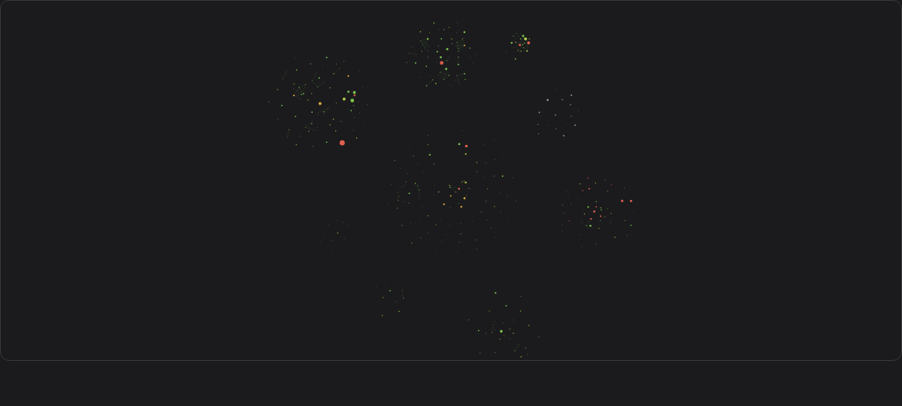

Igor Panarin — what I build, and how it is built.
A catalogue, not a pitch. Every project below shows its current state, the decisions behind it and what comes next. All of it is made by one person working with AI. The order is not a ranking — most recently moved comes first, so the top of this page is whatever I am living in now.
Work

Speech-therapy material assembled for one specific child: every word filtered against the sounds that child cannot say yet.
A focus timer with no digits on screen. Time is carried by sound — a flight toward a star, and arrival ends the session.

A watchable simulation: a handful of inhabitants, simple rules, one valley. Nothing is scripted — the story is whatever emerges.

Raw search data turned into a sky you can navigate: each star a query, its size the volume, its colour how crowded that door already is.
A Chrome extension turning a ChatGPT conversation into a clean PDF. In the store, 346 users, rendered on its own server rather than a paid API.

A way of keeping context alive across sessions: each project holds its own memory in plain files, so work resumes instead of restarting. Nineteen run on it.